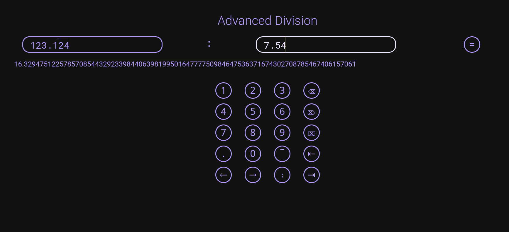

API / CLI
JavaScript
Include this code to use Advanced Division in your website / JavaScript project:
<script src="https://cdn.jsdelivr.net/gh/ratajs/Advanced-Division-js@1.1/AdvDiv.min.js" type="text/javascript" integrity="sha384-F92uLNwg7qk0tLL5q0cIZ6SCkXVQUVfcdEeTaWB8KM21oqoz4ncJVAhgoZBx+UCo" crossorigin="anonymous"></script>
Usage:
advdiv(n1, n2[, r[, rstr1, rstr2]])
- n1 – First number (numerator)
- n2 – Second number (denominator)
- r – Recurring decimals of the first number (default
0) - rstr1 – String to be inserted before recursion (default
"[") - rstr2 – String to be inserted after recursion (default
"]")
Python
Download the AdvDiv.py file and import it with:
import AdvDiv
Usage:
AdvDiv.div(n1, n2[, r[, rstr1, rstr2]])
- n1 – First number (numerator)
- n2 – Second number (denominator)
- r – Recurring decimals of the first number (default
0) - rstr1 – String to be inserted before recursion (default
"[") - rstr2 – String to be inserted after recursion (default
"]")
Dart
Download the AdvDiv.dart file and import it with:
import 'AdvDiv.dart';
Usage:
advdiv(double n1, double n2[, int r[, String rstr1, String rstr2]])
- n1 – First number (numerator)
- n2 – Second number (denominator)
- r – Recurring decimals of the first number (default
0) - rstr1 – String to be inserted before recursion (default
"[") - rstr2 – String to be inserted after recursion (default
"]")
CLI
Download the advdiv file for Linux or advdiv.exe for Windows. You can move the file to /bin/ or another directory specified in the PATH environment variable on Linux to use it anywhere.
Usage:
advdiv n1 n2[ r]
- n1 – First number (numerator)
- n2 – Second number (denominator)
- r – Recurring decimals of the first number (default
0) - rstr1 – String to be inserted before recursion (default
"[") - rstr2 – String to be inserted after recursion (default
"]")
GUI
Kirigami
Kirigami is a framework by KDE, which is based on Qt. This version looks best when used in a Qt‐based environment, like KDE Plasma or LXQt. It is available for Linux as a Flatpak bundle, a Deb package or an archive with an installation script.
Installation instructions for Linux (Flatpak):
- Flatpak is a universal package distribution system for Linux, this method should work on most desktop Linux systems
- Download the Advanced-Division-Kirigami-Linux.flatpak file
- Open terminal (often can be done with Ctrl+Alt+T)
- Navigate to the directory, where the downloaded file is, e. g. by entering
cd ~/Downloads/and pressing enter - Enter
flatpak install Advanced-Division-Kirigami-Linux.flatpakand hit enter - If it doesn’t work, make sure you have Flathub repository enabled by entering
flatpak remote-add --if-not-exists flathub https://flathub.org/repo/flathub.flatpakrepoand trying the previous command again - You can uninstall the application with
flatpak remove cz.ratajs.advdiv
- You can install the program with a deb package if you use Debian‐based OS, like Ubuntu, Pop!_OS, Linux Mint, elementary OS or KDE neon
- Download the Advanced-Division-Kirigami-Linux.deb file
- Enter
sudo dpkg -i Advanced-Division-Kirigami-Linux.deband hit enter - You can uninstall the package with
sudo dpkg -r advdiv
- You can use this method if neither of the previous worked for you or you don’t have a Debian‐based OS and don’t want to use Flatpak, but there could be problems with KDE dependencies (if you use KDE apps or Plasma desktop, you will likely have all the required packages installed)
- Download the Advanced-Division-Kirigami-Linux.tar.gz
- Decompress the archive
- Open terminal (often can be done with Ctrl+Alt+T)
- Navigate to the decompressed folder, e. g. by entering
cd ~/Downloads/AdvDiv-Kirigamiand pressing enter - Enter
chmod +x install.sh, hit enter and then./install.shand press enter again - Enter your root password if prompted
- The app should be installed in a short time
- To uninstall the app, run the
uninstall.shfile the same way asinstall.sh - You can replace
install.shwithinstall-noroot.shanduninstall.shwithuninstall-noroot.shto install / uninstall the app only for the current user (doesn’t require root priviliges)
Flutter
Flutter is a cross‐platform framework by Google. This version Advanced Division is available for Android, Linux and Windows.
Installation instructions for Android:
- Download the Advanced-Division-Flutter-Android.apk file to your Android device
- Try opening the file, allow installing apps from this source if prompted, more info here
- Once opened, click install
- After the process ended, the app should be installed
- You can uninstall it like other applications
- Flatpak is a universal package distribution system for Linux, this method should work on most desktop Linux systems
- Download the Advanced-Division-Flutter-Linux.flatpak file
- Open terminal (often can be done with Ctrl+Alt+T)
- Navigate to the directory, where the downloaded file is, e. g. by entering
cd ~/Downloads/and pressing enter - Enter
flatpak install Advanced-Division-Flutter-Linux.flatpakand hit enter - If it doesn’t work, make sure you have Flathub repository enabled by entering
flatpak remote-add --if-not-exists flathub https://flathub.org/repo/flathub.flatpakrepoand trying the previous command again - You can uninstall the application with
flatpak remove cz.ratajs.advdiv-flutter
- You can install the program with a deb package if you use Debian‐based OS, like Ubuntu, Pop!_OS, Linux Mint, elementary OS or KDE neon
- Download the Advanced-Division-Flutter-Linux.deb file
- Enter
sudo dpkg -i Advanced-Division-Flutter-Linux.deband hit enter - You can uninstall the package with
sudo dpkg -r advdiv-flutter
- You can use this method if neither of the previous worked for you or you don’t have a Debian‐based OS and don’t want to use Flatpak, but there could be problems with KDE dependencies (if you use KDE apps or Plasma desktop, you will likely have all the required packages installed)
- Download the Advanced-Division-Flutter-Linux.tar.gz
- Decompress the archive
- Open terminal (often can be done with Ctrl+Alt+T)
- Navigate to the decompressed folder, e. g. by entering
cd ~/Downloads/AdvDiv-Flutterand pressing enter - Enter
chmod +x install.sh, hit enter and then./install.shand press enter again - Enter your root password if prompted
- The app should be installed in a short time
- To uninstall the app, run the
uninstall.shfile the same way asinstall.sh - You can replace
install.shwithinstall-noroot.shanduninstall.shwithuninstall-noroot.shto install / uninstall the app only for the current user (doesn’t require root priviliges)
- Download the Advanced-Division-Flutter-Windows.exe file
- Follow the instructions in the wizard
- After finishing the wizard, the app should be installed
- The uninstaller should be in the install directory
Web
This version is meant to be opened in a browser. The file is available online here and the offline version is here for you to download.
NW.js
This version is also web‐based, but runs outside any web browser, there are versions for both Linux and Windows.
Installation instructions for Linux:
- Download the Advanced-Division-NWjs-Linux.tar.gz or Advanced-Division-NWjs-Linux-offline.tar.gz file
- Decompress the archive
- Open terminal (often can be done with Ctrl+Alt+T)
- Navigate to the decompressed folder, e. g. by entering
cd ~/Downloads/Advanced-Divisionand pressing enter - Enter
chmod +x install.sh, hit enter and then./install.shand press enter again - Enter your root password if prompted
- The app should be installed in a short time (it can take longer with the non‐offline installer, as it needs to download NW.js unless already installed, the speed depends on your internet connection)
- The uninstaller should be in the install directory (
/var/nw-apps/Advanced-Division/uninstall.sh), you can execute it like the install script.
- Download the Advanced-Division-NWjs-Windows.exe file
- Follow the instructions in the wizard
- After finishing the wizard, the app should be installed
- The uninstaller should be in the install directory